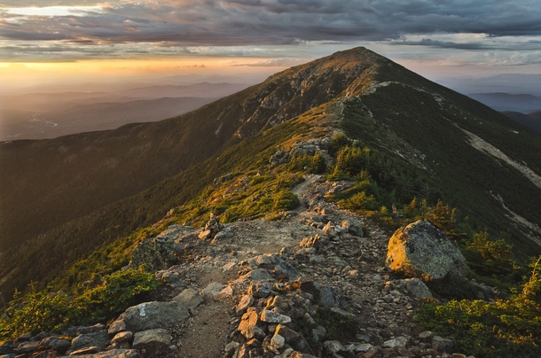

I started hiking seriously when I was around 15. Since then I've covered 8 of the the 48 peaks over 4000' in the northeast United States, as well as trails in Missouri and Wisconsin. I have many more planned, around the world.
Currently my goal is, at minimum, get what is called the "Presidential Traverse" done. This is a multi-day hike across the Presidential Range in New Hampshire. The weather can be unpredictable and the hike itself is fairly strenuous. However, this isn't my main goal. I want to finish the Long Trail , a 2-3 week hike that runs the length of Vermont.
I have many more I'd like to do, such as the Pacific Northwest Trail, and Mt. McKinley in Alaska. I don't know if I'd want to do Everest or not. But regardless, the journey of a thousand miles begins with the first step.
